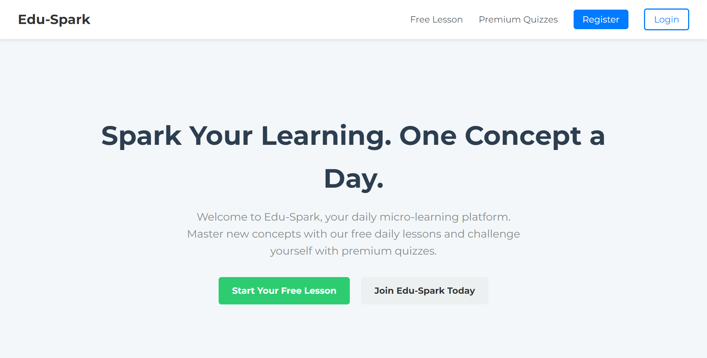
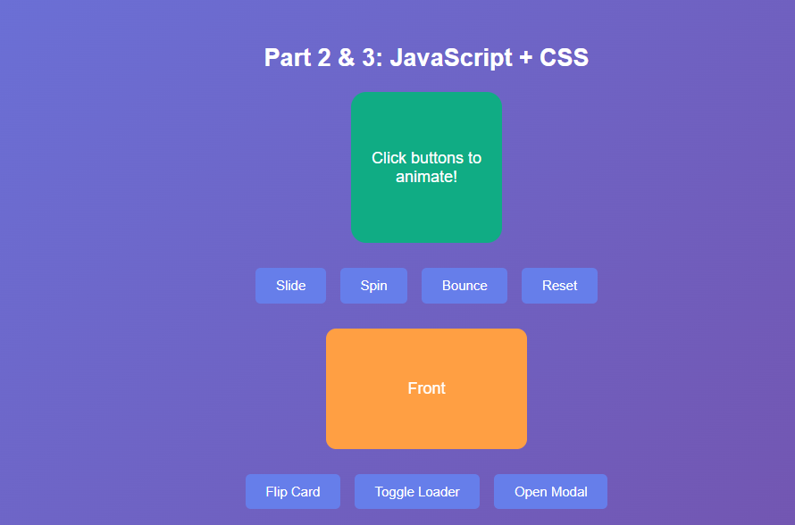

My Projects
A collection of my recent work and personal projects.

EduSpark Microlearning Platform
A comprehensive microlearning platform designed to deliver bite-sized educational content with interactive elements, progress tracking, and personalized learning paths.
HTML
CSS
JavaScript
React

CSS & JavaScript Animations
An interactive showcase of advanced CSS animations and JavaScript-powered transitions, demonstrating modern frontend techniques for creating engaging user experiences.
HTML
CSS
JavaScript